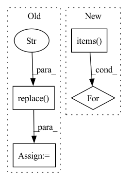

Pattern ID :12183
Before Change
def fill_template(script_text, train_seed, val_seed, batch_size, num_classes, samples_per_class,
target_samples_per_class, train_update_steps, val_update_steps, inner_learning_rate):
script_text = script_text.replace("$train_seed$", str(train_seed))
script_text = script_text.replace("$val_seed$" , str(val_seed))
script_text = script_text.replace("$batch_size$", str(batch_size))
script_text = script_text.replace("$num_classes$", str(num_classes))
script_text = script_text.replace("$samples_per_class$", str(samples_per_class))
script_text = script_text.replace("$target_samples_per_class$", str(target_samples_per_class))
script_text = script_text.replace("$train_update_steps$", str(train_update_steps))
script_text = script_text.replace("$val_update_steps$", str(val_update_steps))After Change
def fill_template(script_text, config):
for key, item in vars(config).items():
script_text = script_text.replace("${}$".format(str(key)), str(item).lower())
return script_text
In pattern: SUPERPATTERN
Frequency: 4
Non-data size: 4
Instances Fragment ID: 41184820
Project Name: baiksung/l2f
Commit Name: bf5643701d3fe61ee447a17832283890c080c1ea
Time: 2019-05-19
Author: antrikohs@gmail.com
File Name: script_generation_tools/generate_configs.py
M Class Name: AnonimousClass
N Class Name: AnonimousClass
M Method Name: fill_template(2)
N Method Name: fill_template(10)
M Parent Class:
N Parent Class:
M File Name: script_generation_tools/generate_configs.py
N File Name: script_generation_tools/generate_configs.py
M Start Line: 54
M End Line: 64
N Start Line: 85
N End Line: 89
Before Change
if images_to_parametrize and "ecs_container_instance" in metafunc.fixturenames:
ecs_parametrization = []
for index, image in enumerate(images_to_parametrize):
image_tag = image.split(":")[-1].replace("." , "-")
ecs_parametrization.append(
(
image,
f"{metafunc.function.__name__}-{image_tag}-"After Change
metafunc, images_to_parametrize, values_to_generate_for_fixture
)
if fixtures_parametrized:
for new_fixture_name, test_parametrization in fixtures_parametrized.items():
metafunc.parametrize(f"{fixture},{new_fixture_name}", test_parametrization)
else:
metafunc.parametrize(fixture, images_to_parametrize)
Fragment ID: 41184757
Project Name: aws/deep-learning-containers
Commit Name: 396813053eeb041349bde37d85b0403b713a280e
Time: 2020-03-29
Author: 54188298+saimidu@users.noreply.github.com
File Name: test/dlc_tests/conftest.py
M Class Name: AnonimousClass
N Class Name: AnonimousClass
M Method Name: pytest_generate_tests(1)
N Method Name: pytest_generate_tests(1)
M Parent Class:
N Parent Class:
M File Name: test/dlc_tests/conftest.py
N File Name: test/dlc_tests/conftest.py
M Start Line: 126
M End Line: 157
N Start Line: 192
N End Line: 220
Before Change
)
html_template = path_utils.read_file_contents_as_string(template)
h = html_template.replace("protostr" , protostr)
if magic:
if "ipykernel" not in sys.modules:After Change
magic: Whether to render in a Jupyter notebook or not.
datasets = []
for output_name, artifact_view in step.outputs.items():
df = artifact_view.read()
datasets.append({"name": output_name, "table": df})
h = self.generate_html(datasets)
self.generate_facet(h, magic) Fragment ID: 41184790
Project Name: maiot-io/zenml
Commit Name: e51baa83069396f3ff822267e5250f84af1ad467
Time: 2021-11-14
Author: htahir111@gmail.com
File Name: src/zenml/post_execution/visualizers/facet_statistics_visualizer.py
M Class Name: FacetStatisticsVisualizer
N Class Name: FacetStatisticsVisualizer
M Method Name: visualize(3)
N Method Name: visualize(3)
M Parent Class:
N Parent Class:
M File Name: src/zenml/post_execution/visualizers/facet_statistics_visualizer.py
N File Name: src/zenml/post_execution/visualizers/facet_statistics_visualizer.py
M Start Line: 39
M End Line: 65
N Start Line: 47
N End Line: 52
Before Change
.endswith(CityscapesPath.ORIGINAL_IMAGE):
continue
sample_id = osp.splitext(osp.relpath(image_path, self._path))[0] \
.replace( CityscapesPath.ORIGINAL_IMAGE, "" )
anns = []
instances_path = osp.join(annotations_path, sample_id + "_" +
CityscapesPath.GT_FINE_DIR + CityscapesPath.INSTANCES_IMAGE)
if osp.isfile(instances_path):
instances_mask = load_image(instances_path, dtype=np.int32)After Change
image=image_path_by_id.pop(item_id, None),
annotations=anns)
for item_id, path in image_path_by_id.items():
items[item_id] = DatasetItem(id=item_id, subset=self._subset,
image=path)
return items Fragment ID: 41184787
Project Name: openvinotoolkit/datumaro
Commit Name: d912c033832b04e9fe23348dae056548a4b794af
Time: 2021-09-22
Author: kirill.sizov@intel.com
File Name: datumaro/plugins/cityscapes_format.py
M Class Name: CityscapesExtractor
N Class Name: CityscapesExtractor
M Method Name: _load_items(1)
N Method Name: _load_items(1)
M Parent Class: SourceExtractor
N Parent Class: SourceExtractor
M File Name: datumaro/plugins/cityscapes_format.py
N File Name: datumaro/plugins/cityscapes_format.py
M Start Line: 169
M End Line: 199
N Start Line: 193
N End Line: 233